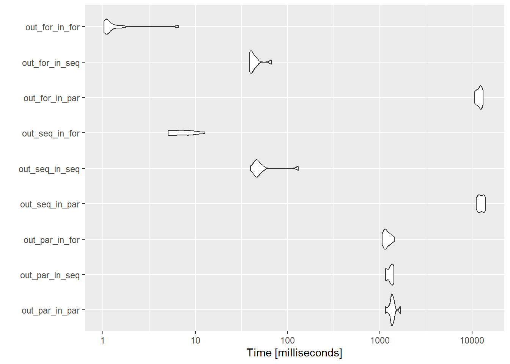
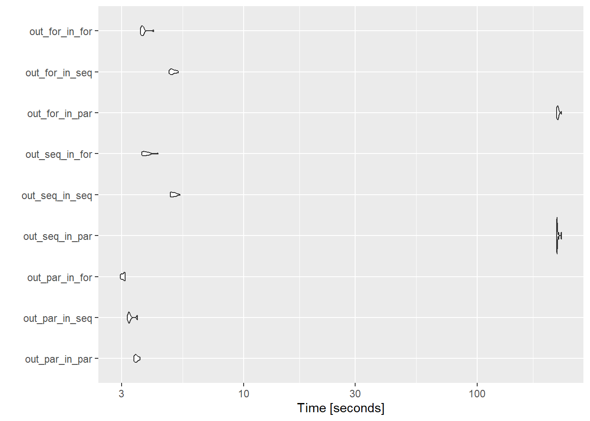

library(microbenchmark)
library(doFuture)
library(foreach)
library(doRNG)
library(ggplot2)
registerDoFuture()
plan(multisession)Nested parallelism
I tend to run a lot of simulation code that consists of some core functions that are then run for a large number of different parameter values. This bit is entirely independent and clearly parallelisable. There are also typically large calculations inside the simulation functions that can be parallelised. What’s not clear to me is whether I should write them all with parallel-friendly code (foreach %dopar%, furrr, etc), or just one or the other. While my particular situation gives me the option to choose, it’s likely not uncommon to call parallelisable functions from a package in code that is itself parallelised, and so is useful to know how this works.
I already did some tests of what sort of work makes most sense to be parallelised so I’ll try to follow those ideas as I do these tests- assuming that the internal parallel code actually makes sense to be parallel, and wouldn’t just be faster sequential anyway. To test this, I’ll attempt to build an example that is non-trivial, but still try to stay minimally complex to avoid getting into writing a complex population dynamics model.
Packages and setup
I’ll use the {future} package, along with {dofuture} and {foreach}, because I tend to like writing for loops (there’s a reason I’ll try to write up sometime later). I test other packages in the {future} family (furrr, future_apply) where I try to better understand when they do and don’t give speed advantages.
Built-in nesting
The foreach package provides built-in nesting, with constructions using %:%. This is designed for loops that can be written tightly together (no processing between them). For example, we might write a nested loop over two sets of parameters mean and sd and calculate the realised coefficient of variation and return it as a matrix. Situations with more complexity around dependency in these loops is here.
realised_cv <- foreach(i = 1:10, .combine = cbind) %:%
foreach(j = seq(from = 0, to = 1, by = 0.1), .combine = rbind) %dopar% {
a <- rnorm(1000, mean = 1, sd = j)
sd(a)/mean(a)
}
realised_cv [,1] [,2] [,3] [,4] [,5] [,6]
result.1 0.0000000 0.00000000 0.0000000 0.00000000 0.0000000 0.00000000
result.2 0.1008283 0.09970288 0.1012399 0.09970637 0.1004789 0.09746728
result.3 0.1948659 0.20180507 0.2061238 0.19891376 0.2020873 0.20023736
result.4 0.2878997 0.30436740 0.2961359 0.29949007 0.3065985 0.32072136
result.5 0.4121646 0.40179953 0.3978699 0.40560251 0.3959687 0.39083267
result.6 0.4915330 0.53295027 0.4871696 0.51901392 0.4918437 0.49519587
result.7 0.6088233 0.63926486 0.6041769 0.58187246 0.5878398 0.60517688
result.8 0.7292209 0.69859582 0.7247529 0.70454796 0.6613891 0.68523825
result.9 0.8263427 0.79534527 0.8379815 0.80307838 0.7935680 0.79027229
result.10 0.9423638 0.96120868 0.7991695 0.89693690 0.8607557 0.89615792
result.11 0.9565427 1.03372959 0.9769392 1.01646019 0.9654055 1.01248284
[,7] [,8] [,9] [,10]
result.1 0.0000000 0.0000000 0.0000000 0.0000000
result.2 0.1014378 0.1030771 0.1013798 0.1027107
result.3 0.2031344 0.1998193 0.1986128 0.2087609
result.4 0.2859058 0.2966124 0.3011449 0.3021254
result.5 0.4322656 0.3828475 0.4033456 0.4090713
result.6 0.4974277 0.5106743 0.4971039 0.5181352
result.7 0.5819782 0.5871467 0.6213671 0.6182626
result.8 0.7049132 0.6751651 0.6919145 0.6955699
result.9 0.8317784 0.7846865 0.8260782 0.7633198
result.10 0.8796149 0.9013733 0.9094938 0.8614506
result.11 1.0341074 1.0785966 1.0039062 0.9962265That can be super useful, but isn’t the goal here- I’m interested in the situation where we have
forloop () {
lots of processing
forloop2(outcomes of the processing) {
more processing
}
more processing
}Full loops
Let’s say we have an outer loop that takes a set of parameter values and loops over them. Maybe it is the mean of some distribution. Maybe it’s areas of a spatial dataset to process. Here, we’ll use them as the mean of a distribution, create the distribution, do some calculations, and then send that to the next loop.
The calculations here aren’t doing anything interesting. They’re just setting up a matrix mult, then feeding the outcome of that as parameters to another random number matrix mult, calculating a mean, and then doing another calculation (some sort of weird frankenstein cv).
outer_out <- foreach(i = 1:100,
.combine = c) %dorng% {
# Do a matrix mult on a vector specified with i
a <- rnorm(100, mean = i)
b <- matrix(rnorm(100*100), nrow = 100)
cvec <- a %*% b
# Now iterate over the values in c to do somethign else
inner_out <- foreach(j = cvec,
.combine = c) %dorng% {
d <- rnorm(100, mean = j)
f <- matrix(rnorm(100*100), nrow = 100)
g <- d %*% f
mean(g)
}
h <- sd(cvec)/inner_out
}Functions
In practice, the inner loop is likely a function we’d call. And the outer too, potentially, depending on the structure of the project. And making them functions will make benchmarking much easier. For both inner and outer loops I’ll try parallel and sequential foreach and sequential (because that’s the only option) for. I want to do the factorial test. Is there a slick way to do that without writing nine outer functions? I think yes- pass the inner function as an argument to the outer.
Inner loop
Parallel version
inner_par <- function(in_vec, size) {
inner_out <- foreach(j = in_vec,
.combine = c) %dorng% {
d <- rnorm(size, mean = j)
f <- matrix(rnorm(size*size), nrow = size)
g <- d %*% f
mean(g)
}
}Sequential version
inner_seq <- function(in_vec, size) {
inner_out <- foreach(j = in_vec,
.combine = c) %do% {
d <- rnorm(size, mean = j)
f <- matrix(rnorm(size*size), nrow = size)
g <- d %*% f
mean(g)
}
}Using preallocated for
This is likely to be faster than the sequential
inner_for <- function(in_vec, size) {
inner_out <- vector(mode = 'numeric', length = size)
for(j in 1:length(in_vec)) {
d <- rnorm(size, mean = in_vec[j])
f <- matrix(rnorm(size*size), nrow = size)
g <- d %*% f
inner_out[j] <- mean(g)
}
return(inner_out)
}Outer loop
parallel
outer_par <- function(size, innerfun) {
outer_out <- foreach(i = 1:size,
.combine = c) %dorng% {
# Do a matrix mult on a vector specified with i
a <- rnorm(size, mean = i)
b <- matrix(rnorm(size*size), nrow = size)
cvec <- a %*% b
# Now iterate over the values in c to do somethign else
inner_out <- innerfun(in_vec = cvec, size = size)
h <- sd(cvec)/inner_out
}
return(outer_out)
}sequential
outer_seq <- function(size, innerfun) {
outer_out <- foreach(i = 1:size,
.combine = c) %do% {
# Do a matrix mult on a vector specified with i
a <- rnorm(size, mean = i)
b <- matrix(rnorm(size*size), nrow = size)
cvec <- a %*% b
# Now iterate over the values in c to do somethign else
inner_out <- innerfun(in_vec = cvec, size = size)
h <- sd(cvec)/inner_out
}
return(outer_out)
}Preallocated for
outer_for <- function(size, innerfun) {
outer_out <- matrix(nrow = size, ncol = size)
for(i in 1:size) {
# Do a matrix mult on a vector specified with i
a <- rnorm(size, mean = i)
b <- matrix(rnorm(size*size), nrow = size)
cvec <- a %*% b
# Now iterate over the values in c to do somethign else
inner_out <- innerfun(in_vec = cvec, size = size)
outer_out[, i] <- sd(cvec)/inner_out
}
outer_out <- c(outer_out)
return(outer_out)
}Benchmarks
benchsize = 10
bench10 <- microbenchmark(
out_par_in_par = outer_par(benchsize, inner_par),
out_par_in_seq = outer_par(benchsize, inner_seq),
out_par_in_for = outer_par(benchsize, inner_for),
out_seq_in_par = outer_seq(benchsize, inner_par),
out_seq_in_seq = outer_seq(benchsize, inner_seq),
out_seq_in_for = outer_seq(benchsize, inner_for),
out_for_in_par = outer_for(benchsize, inner_par),
out_for_in_seq = outer_for(benchsize, inner_seq),
out_for_in_for = outer_for(benchsize, inner_for),
times = 10
)
bench10Well, that’s interesting. The inner loop as a for is always fastest. Paralleling the outer loop is faster than sequential or for, unless both loops are for, and that’s far and away the fastest of all.
autoplot(bench10)
Does it change appreciably as the size goes up?
I could write a loop here, but let’s just check it at 100 for the moment- this takes too long to run to do a big look over values.
benchsize = 100
bench100 <- microbenchmark(
out_par_in_par = outer_par(benchsize, inner_par),
out_par_in_seq = outer_par(benchsize, inner_seq),
out_par_in_for = outer_par(benchsize, inner_for),
out_seq_in_par = outer_seq(benchsize, inner_par),
out_seq_in_seq = outer_seq(benchsize, inner_seq),
out_seq_in_for = outer_seq(benchsize, inner_for),
out_for_in_par = outer_for(benchsize, inner_par),
out_for_in_seq = outer_for(benchsize, inner_seq),
out_for_in_for = outer_for(benchsize, inner_for),
times = 10
)
bench100autoplot(bench100)
Now the parallelisation over the outer loop is clearly faster. The simple for for the inner is fastest there.
Are there general conclusions here?
Conclusions
There has to be quite a lot of work done before parallelisation is worth it.
I’m not convinced I have a general conclusion for nestedness- with even more work in the inner loop, would parallel there end up being better?
Need to test specific uses pretty carefully I think, which is unfortunate- it can mean spending a fair amount of time testing configurations
- since the
foris much faster thanforeach %do%, it’s not just a matter of deleting the ‘par’ in%dopar%, unfortunately, but re-framing for aforloop.
- since the
More questions
- What if the split of work was less even? Here, each loop is doing similar amounts of work in the body, but the outer encases the inner, so is doing WAY more work.
- We won't always have control over this if it's an external functionHow do the workers get split up? If we parallel an outer loop over more workers than we have cores, does it matter what happens in the inner loop? Or do they end up causing some sort of worker shuffle?
How do different
plans affect these outcomes- does running this withplan(future.batchtools)require WAY more work to be worth it? Doesplan(multicore)need less?